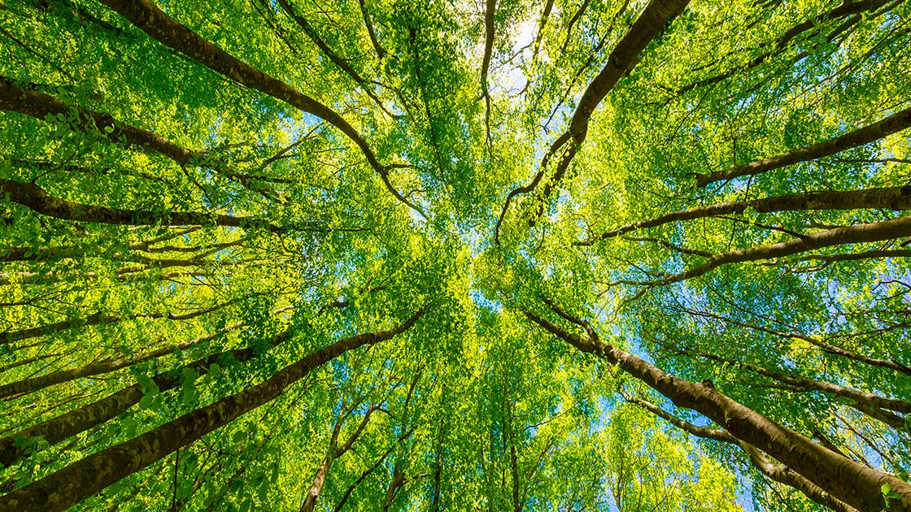

Per natura si intende l'universo considerato nella totalità dei fenomeni e delle forze che in esso si manifestano, da quelli del mondo fisico a quelli della vita in generale può riferirsi alla sfera generale delle piante e degli animali, ai processi associati ad oggetti inanimati,[2] al modo in cui determinati tipi di forme esistono ed ai cambiamenti spontanei come i fenomeni meteorologici o geologici della Terra, la materia e l'energia di cui tutte queste realtà sono composte. Viene inteso come ambiente naturale il deserto, la fauna selvatica, le rocce, i boschi, le spiagge, i mari e gli oceani, e in generale quelle cose che non sono state sostanzialmente modificate dall'intervento umano, o che persistono nonostante l'intervento dello stesso. Ad esempio, i manufatti e le trasformazioni umane in genere non sono considerati parte della natura, venendo preferibilmente qualificati come una natura più complessa. Più in generale, la natura comprende i seguenti contesti e dimensioni della realtà:
